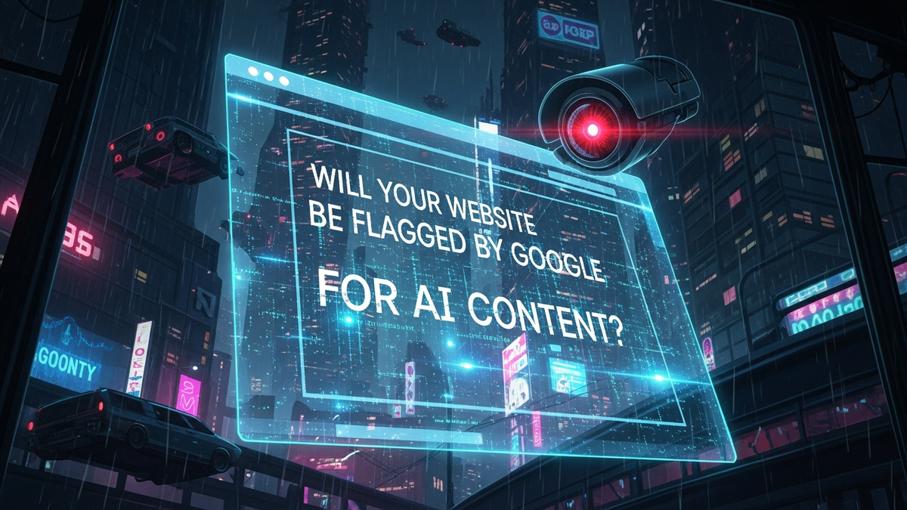

Alright, let's cut through the noise. AI content is everywhere now, and if you're like most webmasters, you're probably sweating. You've heard the whispers: "Google hates AI!" or "My site's going to get de-ranked!" Then there's this whole new layer of complexity: AI watermarking laws. It's enough to make you want to throw your monitor out the window.
But chill. As a cybersecurity guy who's seen more digital shifts than I've had hot dinners, I'm here to tell you the sky isn't falling. Not yet, anyway. We're going to break down what's actually happening, what Google really cares about, and what these new laws could mean for your website. More importantly, I'll give you a battle plan to keep your site safe and thriving. Let's get to it.
First things first: Google doesn't inherently penalize content just because an AI helped create it. That's a myth that needs to die. Google's core mission, the one they've stuck with for decades, is to provide the most relevant and helpful answers to user queries. Their algorithms are designed to find the best information, period. If that information happens to be generated by AI, but it's genuinely useful, accurate, and provides a great user experience, Google isn't going to automatically toss it in the digital dumpster.
The problem arises when AI is used to churn out *bad* content. Think about it: thin, repetitive articles; content stuffed with keywords that makes no sense; or just plain inaccurate information. This is what Google's "Helpful Content System" updates are designed to target. It's not about the tool; it's about the output. If you use a hammer to build a shoddy house, the problem isn't the hammer, it's the craftsmanship. Similarly, if AI produces unhelpful, low-quality content, Google will penalize it, not because it's AI, but because it fails to meet their quality standards.
Google's focus is on E-E-A-T: Experience, Expertise, Authoritativeness, and Trustworthiness. Can AI truly demonstrate unique experience? Can it provide genuine expertise that comes from years of practice or study? Not without significant human input and oversight. Raw AI content often falls short here. It's generic, lacks unique insights, and can sometimes even hallucinate facts. These are the red flags for Google, because they signal a lack of genuine value for the user. They want content that feels like it came from a human who knows their stuff, not a robot summarizing the internet.
When you flood the web with AI-generated content that lacks human editing, unique perspectives, or factual verification, you're essentially creating digital noise. Google's algorithms are constantly evolving to filter out this noise. They look for patterns indicative of content created "at scale" for ranking manipulation rather than for helping users. This can include mass-produced articles on slightly varied topics, content that merely rehashes existing information without adding new value, or even content that's grammatically correct but utterly devoid of personality or deep understanding. Such content often triggers Google's spam policies, not because it's AI, but because it's manipulative and unhelpful. The goal is always to connect users with the best possible answer, and if your AI content isn't the best answer, it won't rank. It's really that simple. Your job is to ensure that anything on your site, regardless of how it was drafted, meets Google's high bar for user value and demonstrates clear human oversight and expertise.
Okay, so Google cares about quality. But what about these new laws? "AI watermarking" sounds pretty sci-fi, right? In simple terms, a digital watermark is like a hidden signature embedded in digital content. Think of it like a master painter signing their artwork, but in a way that's often invisible to the naked eye. The idea behind AI watermarking laws is to make it mandatory for AI-generated content to carry such a signature, disclosing its artificial origin.
Why do governments care? Well, the rise of powerful AI models has brought with it concerns about deepfakes, misinformation, intellectual property, and general transparency. If you can't tell if a video of a politician is real or AI-generated, or if a news article was written by a human journalist or an algorithm, that's a problem for society. These laws are an attempt to bring some order to the Wild West of AI content. They want to ensure that users know when they're interacting with something created by a machine.
Humanize your text and bypass any AI detector instantly with Undetectable AI.
BYPASS AI DETECTION NOWThere are generally two types of watermarking being discussed: perceptible and imperceptible. Perceptible watermarks are obvious – a visible "AI-generated" tag on an image, or an audible disclaimer in an audio file. Imperceptible watermarks are much more subtle, embedded directly into the data itself, like steganography (hiding data within other data) or specific metadata tags. For text, this is tricky. It could involve embedding subtle stylistic patterns or specific linguistic markers that an AI detector could spot. The EU AI Act, for example, is pushing for such transparency, and the US government has also issued executive orders exploring similar requirements.
The challenge with watermarking, especially for text, is that it can be incredibly easy to remove or bypass if someone is determined. A simple paraphrase or even minor human edits can often erase any subtle AI-embedded signature. So, the goal isn't necessarily to *stop* AI content from being created, but to create a system where its origin can be identified, either for legal accountability, to combat disinformation, or simply to provide transparency to the end-user. These laws are still being hammered out, varying significantly by jurisdiction. But the underlying principle is clear: governments want to know what's real and what's not, and they want you to know too.
These regulations are aiming to establish content provenance, allowing users and platforms to trace the origin of digital assets. For images and audio, watermarking is technically more robust, leveraging inherent structural properties to embed information that is harder to remove without degrading the content. For text, however, the challenge is immense. Language is fluid, and even minor alterations can destroy an embedded signal. This leads to a constant cat-and-mouse game between watermark creators and those seeking to remove them. The regulatory push is also driven by intellectual property concerns; if AI models are trained on copyrighted material, watermarks could potentially help identify such usage or at least provide a basis for future legal frameworks regarding AI-generated works. Compliance could mean mandatory disclosures on your website, specific metadata tags, or even using only AI models that embed compliant watermarks. Ignoring these evolving laws could lead to legal penalties, fines, or even content removal orders, especially in highly regulated sectors like news, finance, or healthcare. It's a complex, evolving landscape that demands constant vigilance.
Now, this is where it gets interesting for your website. If these watermarking laws become widespread, how might Google, the ultimate gatekeeper of search, react? Google already has incredibly sophisticated detection methods. They don't need a watermark to spot low-quality, spammy content. Their algorithms analyze behavioral patterns, content quality signals, user engagement, and a whole host of other factors to determine what's helpful and what's not.
Watermarks, if they become standardized and robust, could potentially *supplement* these existing detection methods. They'd provide an explicit signal that Google could use. But here's the kicker: Google's primary incentive is always to provide the *best* result to a user, regardless of its origin. Think of it this way: if a restaurant serves an amazing meal, you don't care if the chef used a traditional wood-fired oven or a fancy new induction hob. You just care that the food tastes good. Similarly, if AI-generated content is genuinely helpful, accurate, and engaging, Google might be hesitant to penalize it simply because it's AI.
So, what are the potential scenarios?
Google's existing systems are already adept at identifying patterns of low-quality, mass-produced content, which often, by coincidence, happens to be AI-generated without proper human oversight. Watermarks could serve as a direct, explicit signal to these systems, potentially making their job easier. However, the ethical implications for Google are significant. Does explicitly labeling content as AI-generated create an automatic bias in users, even if the content is high-quality? Google needs to balance transparency with ensuring that genuinely helpful content isn't unfairly disadvantaged. The risk of an "arms race" where creators try to circumvent watermarks, and AI developers try to make them more robust, is also a factor. This would divert resources from focusing on content quality. Therefore, Google is likely to approach watermarks cautiously, integrating them as one data point among thousands in their ranking signals, rather than a standalone punitive measure. Their overarching goal remains user satisfaction, and any implementation of watermark detection would ultimately serve that purpose, either by providing context or by helping to filter out truly deceptive content.
Alright, enough with the theory. Let's talk about what you need to do to protect your traffic today:
Google isn't declaring war on AI; it is declaring war on mediocrity. You don't need to stop using AI tools to build your business—you just need to stop treating them as your final author. Use AI as an exoskeleton to speed up your workflow, but let human expertise be the brain driving it. Adapt your editorial process now, or watch your traffic flow to competitors who did.
Don't wait for the headlines. Our Private Telegram Channel delivers real-time AI security updates and digital wealth strategies before they go viral. Stay protected. Stay ahead.
⚡ JOIN THE 1% NOWNo sign-up required. Instantly check risks, analyze AI text, or calculate your digital finances.